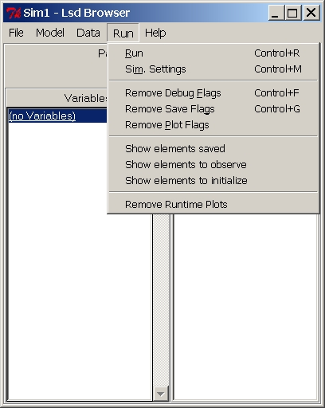
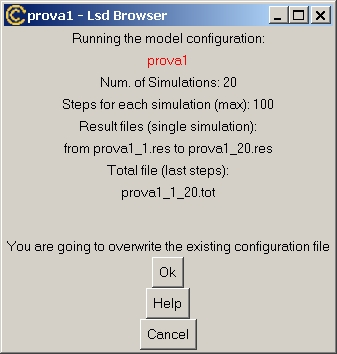
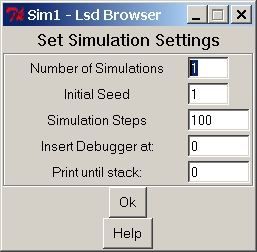

Menu "Run"
From this menu it is possible to start the simulation run of the
currently
loaded model and change the simulations settings not related with the
model
content. It also provides shortcuts to re-set the debug, runtime plot
and
saving options to all the elements of the model.

| Menu "Run" Entries: | Other Menus of the Browser: |
| Run | Menu File |
| Simulation Settings | Menu Model |
| Remove Debug Flags | Menu Data |
| Remove Save Flags | Menu Help |
| Remove Plot Flags | |
| Show elements saved | |
| Show elements to observe | |
| Show elements to initialize | |
| Remove Runtime Plots |
(Menu Run) "Run"
Shortcur: control+r.
Start the simulation run. Lsd will write (and in case, overwrite) the configuration file with the data currently loaded.
Before starting, the system provides a summary of the options chosen
for the simulation settings. The summary differs depending on the
running
options chosen, defined in the Simulation
Settings
menu entry. Two main running options are available: single run and
multiple
runs.
In the first case the simulation runs in memory only. After the
exercise
the data are stored in memory so that users can access them by means of
the Analysis of Result module (menu Data).
If a new simulation is run, the results from the previous simulation
are
cancelled and replaced with the new values. Remember that after a
simulation
only the time series of Variables marked to be saved can be observed in
the results (see the Variable list
in the main Browser for info on how to mark a Variable to be saved).
Result
data stored in memory can be written on file for later use using the
command
Save Results in Menu Data.
In case of multiple runs, instead, at the end of each simulation exercise the results are saved in a Lsd result file. The name of the file is the same name of the model name plus a integer number referring to the "seed" used for the pseudo-random number generator. During a multiple-run exercise Lsd creates also a summary result file, having as many "cases" as many simulations runs. Each record of this summary file (having the extension .tot) contains the values of the saved elements of the model at the very last time step of each simulation.

On the summary window, clicking on Ok
the simulation will start, while clicking on Cancel
the system will abort the simulation and return to the main Browser.
(Menu Run) "Sim.
Settings"
Shortcut: control+m.
Set the main simulation options using the following interface

It is possible to determine:
- Number of Simulations.
It sets the number of simulations runs to make. Each simulation run
uses
the same initial data of the present model with different seeds for the
pseudo-random number generator. If only one simulation is run is
requested
Lsd will not save the results (which can be done manually after the
simulation
using entry Save Result in menu Data).
If more than one simulation run is chosen, then the results for each
run are saved automatically in a file (to be used with the Lsd Analysis
of Results module, from menu Data)
whose
name is composed by the configuration name and by the number of the
seed
generator (with the extension .res). In this way the user can know the
seed used to produce each simulation run. After each simulation run,
the
system reloads automatically the configuration, setting increasing
seeds
for generating random numbers. Besides the results for each simulation,
in case of multiple runs Lsd generates also a summary result file with
the name of the configuration and the extension .tot. This result file
can be open with the Analysis of Result
module
(from menu Data), and contains the values
saved
for each simulation at the very time step of their runs. This file can
therefore be used to perform robustness tests over the whole set of
simulation
runs.
Note that if the the user requests multiple simulation runs, and there are series set to be shown in Run Time Plots, then there will be as many plots as simulation runs, possibly crowding the screen with hundreds of windows. In this case, either remove the option to plot the Run Time Plots from every Variable in the model before running the set of simulations, or remove the whole set of Run Time Plot windows after the simulation runs (both commands are contained in menu Run).
- Initial seed. Users
can
decide which seed to use, so that they can replicate exactly also the
pseudo-random
events. If more than one simulation runs have been requested, each of
them
will use a different seed value, starting from the one indicated here,
and increasing of one unit.
The seed number is used to generate pseudo-random numbers. That is,
a simulation run using random values will generate exactly the same
(pseudo-)random
values if the same seed is used.
- Simulation steps. How many time steps a simulation run has to perform. After the value here indicated the simulation will stop. Note that modellers can write model's equations such that the simulation can stop even before (for example, if certain conditions are satisfied). Moreover, model users can stop the simulation runs using the button Stop in the Log window during a simulation.
- Insert Debugger at:
Make
activate the Debugger Mode at the specified time step. When the
simulation
run reaches this time step, it is interrupted at the end of the
computation
of a Variable marked to be debugged. See here
on how to mark Variables to be debugged, and here
for help on the Lsd debugger.
- Print until Stack: During a simulation the system determines automatically the order in which variables must be computed. If you want to control the exact order, you can request the system to print in the Log window one line for each variable computed. In general, a variable requested by the system to be computed cannot complete its equation because requires the value of another variable that still needs to be updated. In this case, the system interrupt the first variable, computes the second one, and then continue with the first variable. The computation of a variable interrupted for this reason is said to be placed on the stack, saving all the current values, to be later used when the computation continue. If you insert in this entry the value 1, the system will print one line for each variable updated because the system requested to, and not because another variable requested its value. That is, all the variables computed at stack 1. Setting a very high level, with almost certainty the system will issue a line for every variable computed. For more information on this see the documentation of the Lsd simulation manager.
(Menu Run)"Remove
Debug Flags"
Shortcut: control+f.
Remove from any Variable in the model every debug option possibly
existing.
See Lsd Debugger for the debugging of Lsd
Variables.
Remove from any variable in the model every save option possibly
existing.
If the simulation is run after having used this option, no data will be
saved during the simulation run for Analysis
of
Result module.
(Menu Run) "Remove
Plot Flags"
Remove from any Variable in the model every run time plot option
possibly
existing. If the simulation is run after having used this option the
system
will not create the run time plot.
(Menu Run)"Show elements saved"
Prints in the Log window the list of the
Variables and Parameters whose
values will be saved during a simulation for the Analysis of Results after a simulation run.
These are the elements with the option
Save set on.
(Menu Run)"Show elements to observe"
Prints in the Log window
the list of the Variables and Parameters whose
values can be worth to observe. These are the elements with the option Observe set on. The modeller
indicates with this option that this element contains relevant results,
although not all of them may be possible to actually save.
(Menu Run)"Show elements to initialize"
Prints in the Log window the list of the Variables and Parameters whose values need to be initialized. These are the elements with the option Initialize set on. The modeller indicates with this option that these elements affect the results. In many models, in fact, there are parameters or lagged variables that are not necessary to initialize.(Menu Run)"Remove
Runtime Plots"
Removes all the run time plot's possibly
created during previous simulation runs.